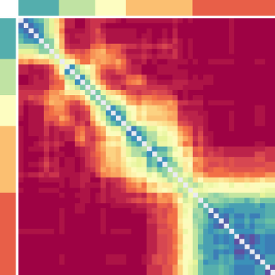

Intrinsic Brain Networks are Organized by Frequency Relationships
- Shahir Mowlaei pitt
- Aarti Singh cmu
- Avniel Ghuman pitt
VAMP Meeting
University of Pittsburgh
Department of Neurological Surgery
March 21, 2017
The role of synchrony in neural coding I
- Neurons are dynamic entities capable of engaging in multi-modal oscillatory behavior.
- This osicllatory actvity is realized over large-scale (sub-) networks of the brain.
- The synchronous activity of these cortical subnetworks is suggested to provide the bridge from single-neuronal activity to basic cognitive computations.
- The cross-talk and competition of these (dynamic) subnetworks could aid the progression of higher cognitive tasks and formation of cohesive percepts.
The role of synchrony in neural coding II
- Ocillaotry coupling of neuronal populations is often times examined withing a single frequency band/window.
- Most studies rely on canonical frequency bands or certain sub-windows of that better serve the proposed idea.
- The emergence of canonical bands in the literature correlates with their task-specific manifestations.
- There is no apparent reason why two different cognitive tasks would utilize the frequency spectrum for their function in an identical manner.
Let the data decide: parcellation
- We take a data-driven path to functional parcellation of the frequency spectrum in resting-state brain networks.
- We cluster the spectrum based on the similairty of frequency graphs and let the algorithm decide (if and) were to delimit a certain band.
- This systematic compression can be applied to various cognitive tasks and mental states, in healthy and disordered brains.
- In resting state data, the emergent frequency bands agree with lower canonical bands and point to further structure beyond alpha.
- We have a fondness of for fixed parameters.
Let the data decide: backward compatibility
- The emergence of frequency bands as a natural consequence of clustering functional connectivity networks suggests that frequency relationships are tied to the remaining network structure in data.
- The relationship between frequency bands and network topology is highly consistent accross subjects.
- Representative networks of these diffrent bands can be leveraged in assessment of clinical populations in terms of their distance from healthy subject netowrks.
Data: acquisiton
- 10 minutes of visually-fixated resting-state MEG recordings of
- 35 typically developing subjects
- for each integer frequency from 1 to 50 Hz
- PLVs between 5124 brain regions were used to form all-to-all connectivity maps
- artifact removal
End result:
For each subject, and for each frequency from 1 to 50 Hz, we have a network of 5124 brain regions (nodes).
Data: normalization
Motivation:
To remove the inverse frequency effect from subsequent analysis.
Per subject:
- compute the CDF for each frequency graph (over edge weights);
- average the above CDFs;
- for each frequency graph, re-map the edge weights according to this common CDF.
Any potential structure in the frequency band should now be free from density bias and only due to the remaining network structure.
Graph distance
Our problem is a special case of graph similarity analysis in that the nodes are identical across graphs (1 to 50 Hz, per subject).
We employ three measures:
- $\mathbf{L}_1$ distance Average absolute edgewise difference
- Degree distance One minus the weighted degree correlation
- Local clustering coefficient (LCC) $\cdots$ distance One minus the LCC correlation between binarized graphs
This measure is parametric (later, we fix it).
ben guo
$\mathbf{L}_\mathbf{1}$
Degree
 $\mathbf{LCC}_{\mathbf{75}}$
$\mathbf{LCC}_{\mathbf{85}}$
$\textbf{LCC}_{\mathbf{95}}$
$\mathbf{LCC}_{\mathbf{75}}$
$\mathbf{LCC}_{\mathbf{85}}$
$\textbf{LCC}_{\mathbf{95}}$
$\mathbf{LCC}_{\mathbf{75}}$
$\mathbf{LCC}_{\mathbf{85}}$
$\textbf{LCC}_{\mathbf{95}}$


Clustering: method
Clusters correspond to frequency bands.
Spectral clustering is our method of choice.
- The Ng-Jordan-Weiss interpretation of spectral clustering is adopted.
- Spectral clustering works with the notion of similarities. We normalize the distance matrices to the $\mathbf{[0,1]}$ interval and subtract their off-diagonal entries from unity to arrive at a similarity matrix.
- Instabilities We repeat the clustering process a number of times and assign the cluster (band) labels by majority vote.
$V(X;Y) =\; -\,\sum_{i,j}\, \frac{\left|X_i\cap Y_j\right|}{|X|\equiv |Y|}\cdot\left\{\log\left(\frac{\left|X_i\cap Y_j\right|}{\left|X_i\right|}\right)+\log\left(\frac{\left|X_i\cap Y_j\right|}{\left|Y_j\right|}\right)\right\}$
Variation of Information (VI) is used to quantify the inter-subject agreement. For a given ‘number of clusters’:
Clustering: how many bands? I
Exploiting the ‘subject’ degree of freedom
to fix the number of clusters.
to fix the number of clusters.
Variation of Information (VI) is used to quantify the inter-subject agreement. For a given ‘number of clusters’:
- compute the average VI between all pairs of subjects;
- (symmetrically) permute the distance matrices and recompute the first step a given number of times;
- subtract the average of the second step from the first.
VI is computed over a pair of clustering outputs: partitions.
Clustering: how many bands? II
Mean of permutation-shifted variation of information between all subject pairsClustering: integration I

$\hspace{.25em}\mathbf{LCC}_\mathbf{95}$
Clustering: integration II
Prediction: feature extraction
We reduce the dimensionality of feature space from 13125126 to 50 Principal Pomponents (PC); the components derived from different subjects are combined:
- collect the first PC from all subjects;
- without centering the data, compute the first PC (moment) of the above; This is our first representative PC for all subjects: we keep it.
- subtract the above vector from the remaining PCs of all subjects and subsequently renormalize them;
- repteat the above with the remaining (transformed) PCs.
Prediction: classification I
w/ SVMRBF
Prediction: classification II
w/ SVMLin
Representation: motivation
To identify the network structure that separates a frequency band from others.
- It allows us to construct (better ?) classifiers that are informed by graph distance measures.
- The classification accuracy of these learners can be used to assess the proximity of any given network to different frequency bands.
- Assesement of brain disorders in terms of their network distance in different frequency bands to healthy populations.
- To locate brain regions that are responsible for deviation from healthy networks.
Representation: method
Our current method is univariate.
Room for improvement ↵
- For each edge,
- and for each class/band,
- we perform a $t$-test with a one-vs-rest decision function;
- the resluting $p-$value is thresholded at a signifcance level, normalized and assigned to that edge, in that band, as its weight.
Representation: outcome
Summary
- The similarities in frequency graphs are only deriven by network structure.
- The emrging band spefic network structure is highly consistenct accross subjects.
- High classification accuracies obtained in predicting band labels support our claim.
- This consistency suggest the notion of representative networks for frequency bands.